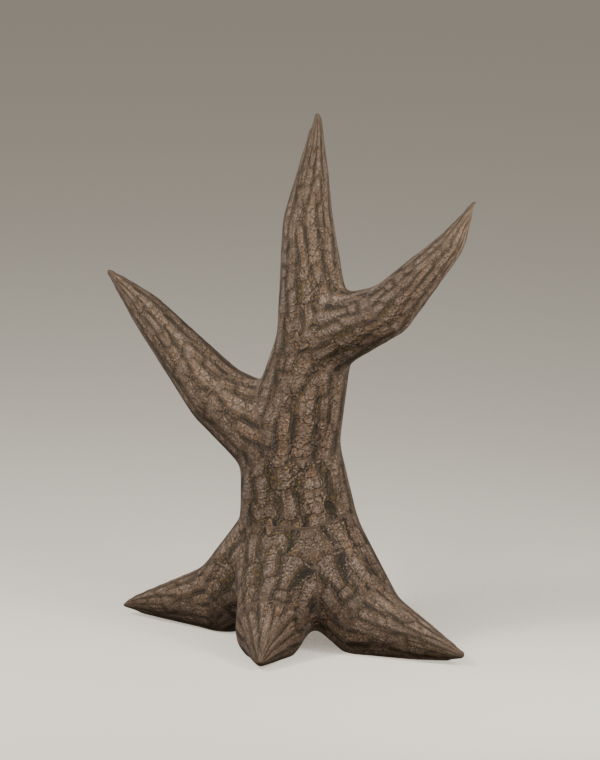
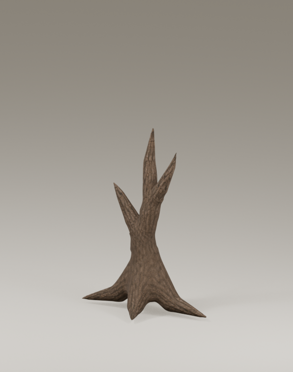
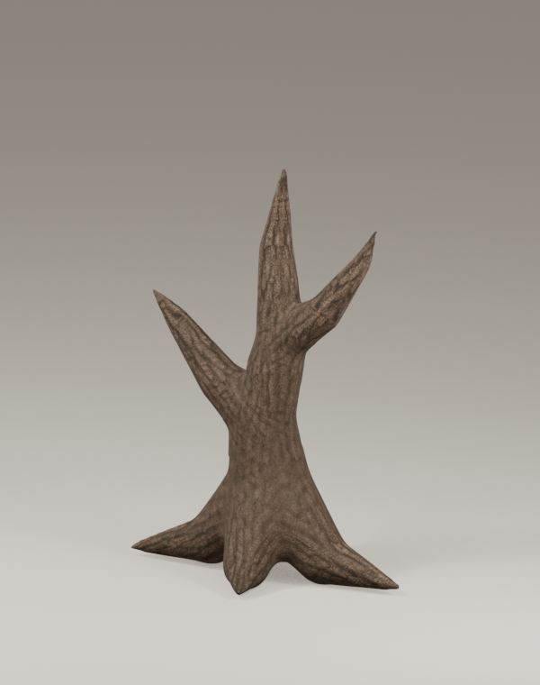

沿枝投影烘焙 · 接缝改善，整体材质未通过
同一连通网格、相机和光照。新版消除旧版主干横向断带，但混合区域的树皮过软，未达到参考质感。不是正式程序或整树完成图。
详细审查 · 源码与结构记录 · 实际固定图集
旧图表：主干中部有横向断带
沿枝投影烘焙：原断带消除，混合纹理仍偏软较短较细形变状态
中间形变状态
固定图集连续形变
36帧、12fps真实离线渲染。不证明二维入口或手机性能，下一项必须实际导出并绘制网格，不能播放这些图片冒充运行时。